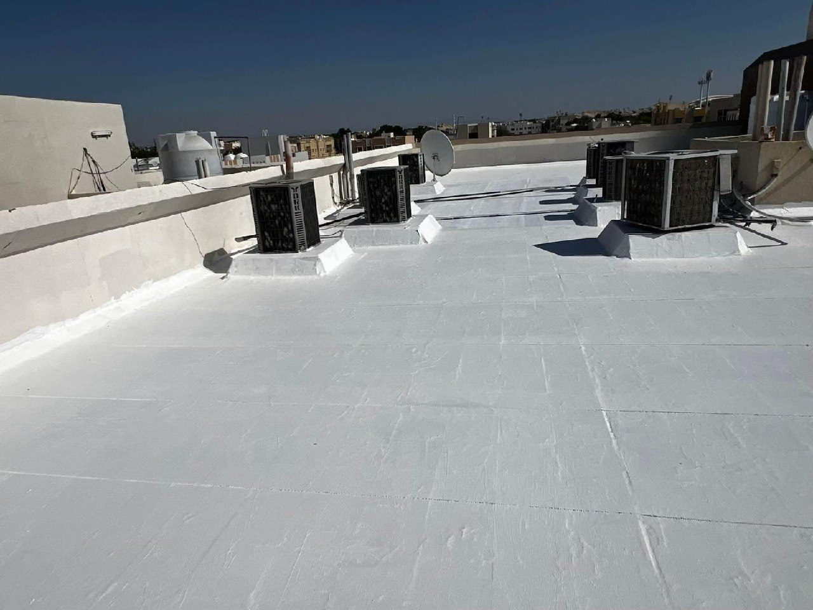

أفضل شركة عزل الاسطح بجدة
أفضل شركة عزل الأسطح ضد المياه والحرارة في جدة – شركة تبارك
اتصل بنا الآنتواصل معنا عبر واتساب
تُعد خدمات عزل الأسطح ضد المياه والحرارة من الضروريات الأساسية لحماية المنازل والفيلات والمباني من تسربات المياه، ودرجات الحرارة المرتفعة، والرطوبة. ونظراً لطبيعة المناخ في مدينة جدة، فإن اختيار نظام العزل المناسب يُعد خطوة جوهرية للحفاظ على عقارك وتقليل تكاليف الصيانة على المدى الطويل.
إذا كنت تبحث عن أفضل شركة لعزل الأسطح في جدة، فإن شركة تبارك تقدم حلولاً احترافية في مجال العزل، مع خبرة واسعة في معالجة مشاكل تسرب المياه. نحن نقوم بتقييم دقيق لاحتياجات كل سطح على حدة، لنحدد الحل الأمثل الذي يتناسب مع حالته.
لماذا تحتاج إلى عزل الأسطح في جدة؟
تتعرض أسطح المباني لأشعة الشمس المباشرة، وتقلبات الطقس، وهطول الأمطار الموسمية. وفي حال غياب العزل المناسب أو عدم كفايته، قد تظهر مشكلات تؤثر سلباً على راحة السكان وسلامة الهيكل الإنشائي للمبنى.
وتشمل الفوائد الرئيسية لعزل الأسطح ما يلي:
- الحماية من تسربات المياه: عند تنفيذ العزل المائي بشكل صحيح، فإنه يمنع تسرب مياه الأمطار إلى الأسقف والجدران.
- تقليل انتقال الحرارة: يساعد العزل الحراري في الحد من انتقال الحرارة من سطح المبنى إلى الداخل.
- التحكم في الرطوبة: يساهم العزل الجيد -بالتزامن مع معالجة مصادر الرطوبة- في منع ظهور بقع المياه وتقشر الطلاء.
- الحفاظ على سلامة المبنى: يقلل العزل الفعال من الأضرار الناتجة عن تسربات المياه ويحافظ على الحالة العامة للسطح.
- خفض تكاليف الصيانة: يساعد الكشف المبكر عن المشكلات ومعالجتها في تجنب الإصلاحات المتكررة والمكلفة. ## خدمات عزل الأسطح في جدة من شركة تبارك
توفر شركة تبارك حلولاً مصممة لمساعدة مالكي المنازل والعقارات في جدة على حماية ممتلكاتهم من المشاكل المرتبطة بالمياه والحرارة الزائدة.
1. العزل المائي للأسطح
يهدف العزل المائي إلى حماية الأسطح الخرسانية من تسرب مياه الأمطار وتجمع المياه. وتعتمد كفاءة هذا العزل على الإعداد الجيد للسطح، ومعالجة الشقوق والفواصل، واختيار مادة العزل المناسبة، وضمان وجود نظام تصريف فعال للمياه.
2. العزل الحراري للأسطح
يساعد العزل الحراري في تقليل انتقال الحرارة من سطح المبنى إلى المساحات الداخلية. يمكن أن يؤدي ذلك إلى تعزيز الراحة داخل المبنى والمساهمة في خفض استهلاك الطاقة المستخدمة في أنظمة التكييف، وذلك يعتمد على نوع المبنى وكفاءة العزل المستخدم.
3. عزل الأسطح باستخدام الرغوة (الفوم)
تُستخدم الرغوة (الفوم) في العديد من أنظمة العزل المائي والحراري. وتختلف النتائج النهائية بناءً على نوع المادة المستخدمة، وسُمكها، وطريقة تطبيقها، وطبيعة الطبقة الواقية المضافة فوقها. لذا، ينبغي تحديد النظام الأمثل بعد إجراء فحص دقيق وشامل للسطح.
4. معالجة تسربات المياه والرطوبة
قد تنتج بقع الرطوبة أو تسربات المياه عن تلف في طبقات العزل، أو وجود شقوق، أو خلل في نظام تصريف المياه. لذا، فإن تحديد السبب الجذري للمشكلة قبل البدء بأعمال العزل يضمن التوصل إلى حل أكثر فعالية واستدامة.
كيف تختار أفضل شركة لعزل الأسطح في جدة؟
قبل التعاقد مع أي شركة متخصصة في أعمال العزل، من المهم مراعاة النقاط التالية لاتخاذ قرار مدروس:
1. فحص السطح لتحديد أسباب التسربات أو ارتفاع درجات الحرارة.
2. تحديد نوع مادة العزل الأنسب للمبنى.
3. تجهيز السطح ومعالجة أي شقوق أو أجزاء تالفة قبل البدء في عملية العزل.
4. الحصول على تفاصيل واضحة حول التكاليف، والمواد المستخدمة، والجدول الزمني لتنفيذ المشروع.
5. طلب ضمان مكتوب يوضح مدة الضمان وشروطه وأحكامه (إن وُجد).
6. التأكد من إجراء الفحوصات اللازمة بعد الانتهاء من العمل، وفقاً لنظام العزل المائي أو الحراري الذي تم تطبيقه.
إن اختيار الشركة بناءً على جودة تنفيذها ووضوح تفاصيل خدماتها يُعد نهجاً أفضل بكثير من الاعتماد فقط على السعر الأقل.
ما هي العلامات التي تشير إلى حاجة السطح للعزل المائي أو الحراري؟
هناك عدة مؤشرات قد تدل على وجود خلل في نظام العزل المائي أو الحراري الحالي، منها:
- ظهور بقع مياه على الأسقف الداخلية.
- تقشر الطلاء أو ظهور علامات واضحة للرطوبة.
- وجود شقوق أو تلف في طبقات العزل المائي أو الحراري الحالية.
- تسرب مياه الأمطار إلى الطوابق العلوية.
- ارتفاع درجات الحرارة في الغرف الواقعة مباشرة تحت السطح.
عند ظهور هذه العلامات، يُنصح بإجراء فحص للسطح لتحديد السبب الرئيسي للمشكلة. قد لا تكون إعادة وضع العزل أو مواد منع تسرب المياه كافيةً بحد ذاتها إذا كانت هناك مشكلات كامنة، مثل وجود خلل في نظام التصريف أو عيوب إنشائية تتطلب إصلاحاً.